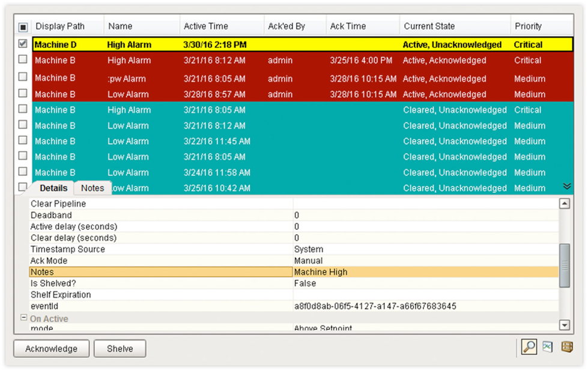
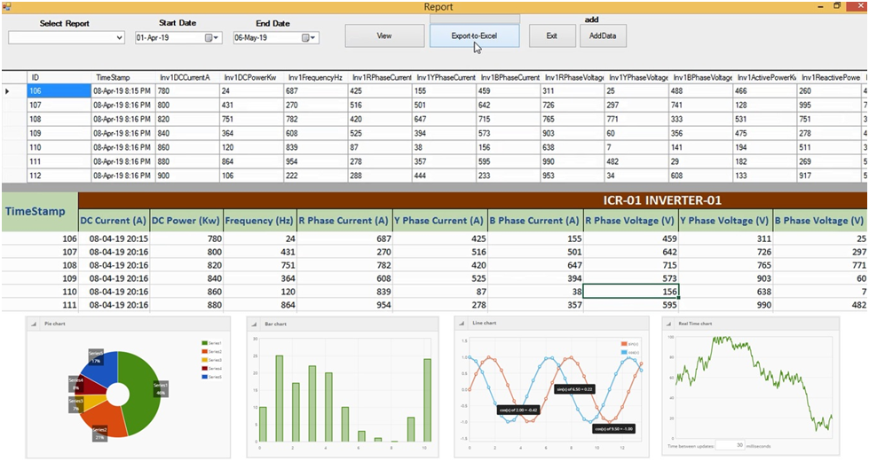

Key Functions of a SCADA system
SCADA systems perform various functions to properly manage remote facilities and plants. Four of these critical functions are as follows:
Data Acquisition
The key function of a SCADA system is to properly acquire the data from sensors and other devices planted in the field. Fields or plants employ multiple sensors that measure different parameters of a process such as flow rate, temperature, weight, pressure, etc. Then, this raw measured data is sent to a programmable logic controller(PLC) which converts it into meaningful information or digital format. This information is then forwarded to a human-machine interface(HMI) where the data is analyzed for decision-making by the human operator.
The majority of the SCADA system does not understand analog data. Due to this, the PLC converts the analog data received from sensors to digital units such as temperature into celsius, signal strength into dBm, etc. Through this, reliable and valid data can be acquired for better decision-making.

Networked Data Communication
A SCADA system uses wireless or wired network technologies to transmit data across different operators and machines. The networks allow control of multiple systems and processes from a single or centralized location. A typical SCADA system mainly utilizes communication protocols such as distributed network protocol, Modbus, IEC 60870-5, etc. However, some systems also use vendor-specific proprietary protocols based on the system requirements. To connect multiple systems and processes, SCADA systems generally use local area networks for small regions and wide area networks for far regions.

Data Presentation
Human-machine interface displays the data to human operators in an understandable manner after acquiring it from the sensors. It monitors all the processes and raises an alarm when processes do not function within the defined operational range. This alarm is raised in the form of lights, sounds, messages, etc., which alerts the human operators. The HMIs have access to historical and current data which can be used to devise strategies for continuously improving business performance.

Monitoring/Controlling
SCADA systems are programmed to remotely control the processes using switches for enabling the operators to easily turn on/off the processes based on their needs. The systems are also capable of performing specific control functions as per the data gathered through sensors. These control systems can easily manage functions including; adjusting temperature, routing power, increasing/reducing the speed of functions, etc. SCADA systems can also automate the monitoring of some processes as per user-defined setpoints, whereas some processes still need human intervention. For example, the SCADA system can automatically open the release valve in case of pressure building in a gas pipeline.

Alarms
This is another major function of a SCADA system for letting the operators know about what’s happening in the field or processes. An alarm in the form of a message, email, or notification is sent to the operator whenever required. This alarm is received and viewed through the Human machine interface which displays the data. Different types of alarms used by SCADA systems are controller alarms, substation alarms, equipment-related alarms, etc.

Reporting
SCADA systems are also helpful in automating reports from the system’s data replacing manual export of data. It is one of the most underestimated functions of the SCADA systems for developing performance-based analytical reports. SCADA systems also allow the scheduling of reports for keeping the operators informed about the progress. In addition, SCADA systems can also provide condition-based and triggered events reports to track trends.
